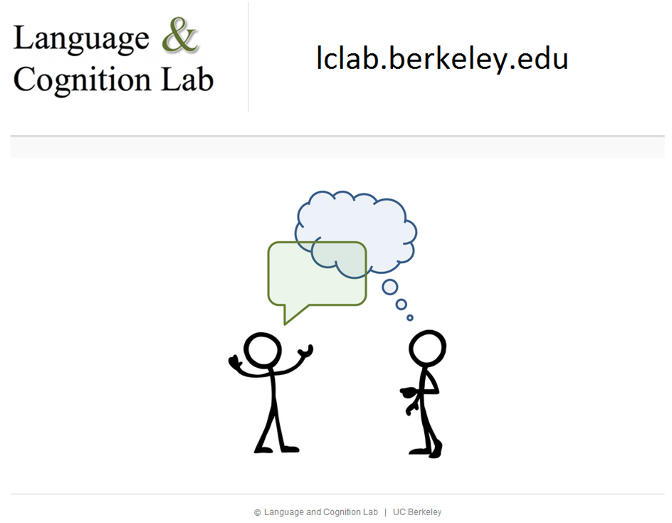

Professor, Linguistics and Cognitive Science
|
 |
Here are
publications,
and a recent CV.
My research investigates the relation of language and cognition,
through computational principles, cross-language semantic data,
and behavioral experiments. I seek to understand why semantic
categories vary across languages in the ways they do, and what
that cross-language variation reveals about the mind and about
communication.